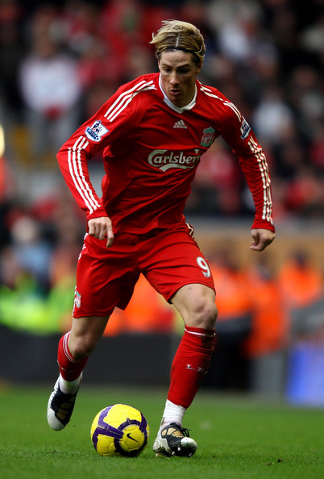

Modern Legends of Liverpool FC
This page is dedicated to some of Liverpool's greatest players in recent history.
Player Bios
Steven Gerrard
Captain Fantastic

Steven Gerrard is easily the most iconic Liverpool player in modern times. A product of Liverpool's academy, Stevie G was a talisman of the club, captaining the side for most of his career. He was known for being a great leader and his thunderous shots.
Quick Facts:
- Appearances: 710
- Goals:186
- Position: Midfield
- Country: England
- Time at Liverpool: November 29, 1998 to May 24, 2015
Fernando Torres
El Niño

Fernando Torres was a prolific goalscorer that Liverpool purchased from Atlético Madrid. His nickname is a nod to his youthful looks, however, he was a terror to opposing defences.
Quick Facts:
- Appearances: 142
- Goals: 81
- Position: Forward
- Country: Spain
- Time at Liverpool: August 11, 2007 to January 26, 2011
Jamie Carragher
Carra
Jamie Carragher was a one-club man, spending his entire professional career at Liverpool. He was a rock in defence, always giving his all for the team, and was a reassuring presence of stability at the back.
Quick Facts:
- Appearances: 737
- Goals: 5
- Position: Defense
- Country: England
- Time at Liverpool: January 8, 1997 to May 19, 2013
Xabi Alonso

Xabi Alonso had an illustrious career, playing for sides like Real Madrid and Bayern Munich, but really made a name for himself during his time at Liverpool. He was known for his excellent vision and pinpoint long-range passing.
Quick Facts:
- Appearances: 210
- Goals: 19
- Position: Midfield
- Country: Spain
- Time at Liverpool: August 29, 2004 to May 24, 2009
Luis Suarez
El Pistolero

Luis Suarez was bought by Liverpool from Ajax, and turned out to be one of the best purchases in recent memory. He was a sublime goalscorer, and cemented himself as one of the best attackers in the world during his exciting stint at Liverpool.
Quick Facts:
- Appearances: 133
- Goals: 82
- Position: Forward
- Country: Uruguay
- Time at Liverpool: February 2, 2011 to May 11, 2014
Timeline